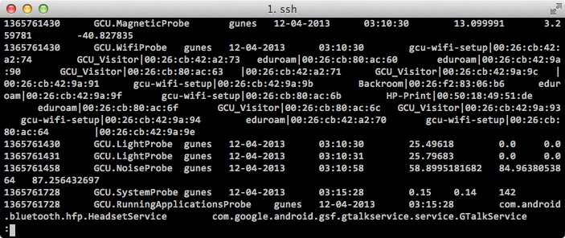

Datasets

Here is a list of datasets I have been tinkering with in the last few years. While I did my best to remove any sensitive information from the datasets, please use responsibly :-)
- GCU dataset, version 1: Sensor dataset, collected from 7 Android users. Sensors include light, noise, rotation, magnetic field, running applications and available wifi networks. Cell towers, wifi networks and user names are anonymized. Sampling rate is 5 minutes.
- GCU dataset, version 2: Sensor dataset, collected from 4 Android users. Sensors include light, noise, rotation, magnetic field, accelerometer, running applications and available networks. Sampling rate is 1 minute.
- GCU dataset, version 3: Sensor dataset, collected from my Samsung Galaxy S2. Nothing is anonymized. Sampling rate is 1 minute. Likely to contain GPS data.
- Arduino sensor dataset: Collected from an Arduino board that had motion, light, humidity and temperature sensors connected to it. Data is collected from a small studio apartment.
- System call dataset: System call dataset which was collected from a Redhat 6.2 machine for my thesis. Contains both normal and attack data.